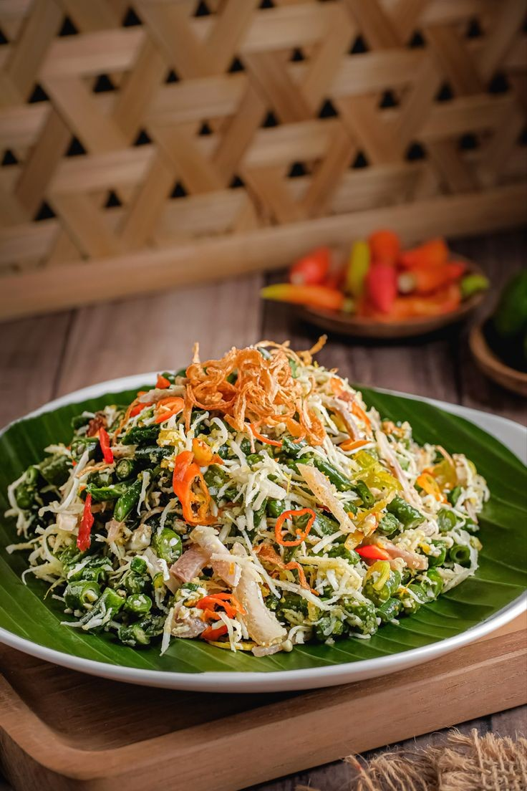

Apa itu Lawar?
Lawar adalah hidangan khas Bali yang merupakan perpaduan antara daging cincang, kelapa parut, dan campuran bumbu khas Bali. Hidangan ini sering disajikan dalam upacara adat Bali dan menjadi bagian penting dari budaya kuliner Bali.
Bahan Utama
Lawar biasanya dibuat dari daging babi atau ayam, dicampur dengan kelapa parut yang telah disangrai, bawang merah, bawang putih, cabai, dan rempah lainnya. Beberapa jenis lawar juga menggunakan darah segar untuk memberikan warna dan cita rasa khas.
Resep Pembuatan
Bahan-Bahan
- 200 gram kacang panjang, potong2
- 50 gram touge
- 3 lembar daun kol, potong2
- 1 buah wortel, potong korek
- 1/2 buah kelapa setengah tua, parut
- 1/2 sdt gula pasir
- 1 sdt kaldu jamur
- 1/2 sdt garam
Bahan Bumbu Kelapa
- 6 siung bawang merah
- 3 siung bawang putih
- 2 butir kemiri
- 1/2 sdt ketumbar
- 2 cm lengkuas
- 2 cm kunyit
- 2 cm kencur
- 1 sdt garam halus
Cara Pembuatan
- Cuci bersih dan tiriskan sayuran. Rebus sayuran lalu tiriskan dan sisihkan
- Tumis bumbu halus sampai harum, ambil setengahnya. 1/2 bagian di yang masih diwajan, dicampur dengan parutan kelapa. Lalu masak sampai kekuningan. Angkat dan sisihkan
- 1/2 bagian bumbu lagi, masak bersama sayuran sampai tercampur rata, lalu masukan bumbu kelapa. Beri garam, gula dan kaldu bubuk. Aduk rata test rasa
- Bila rasanya susah sesuai, angkat dan sajikan.
Penyajian
Lawar biasanya disajikan bersama nasi putih, sate lilit, dan sup kuah ayam. Hidangan ini paling enak dimakan segera setelah selesai dimasak untuk menjaga kesegarannya.